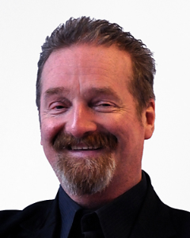
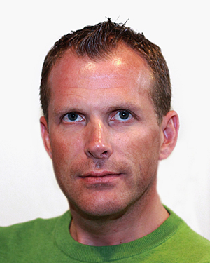

Foredrag
Velkommen
Velkommen til fagtur
Talk, Fredag 28. April 14:00-14:20, Rom: Show lounge

Jan Henrik Gundelsby
Jan Henrik er fagsjef i Knowit Objectnet. Jobber for tiden litt hos Oslo kommune med arkitektur og prosess. Driver også med salg, marked og hvordan vi skal få de rette nye prosjektene. Glad i naturen og lidenskapelig opptatt av fag!
Intro dag to
Talk, Lørdag 29. April 14:00-16:00, Rom: Auditoriet
Jan Henrik Gundelsby
Jan Henrik er fagsjef i Knowit Objectnet. Jobber for tiden litt hos Oslo kommune med arkitektur og prosess. Driver også med salg, marked og hvordan vi skal få de rette nye prosjektene. Glad i naturen og lidenskapelig opptatt av fag!
Innslag fra Lars Lundby om visualisering av kompetansekartlegging
Beskrivelse kommer
Talk, Lørdag 29. April 14:00-16:00, Rom: Auditoriet
Lars Lundby
Erfaren systemarkitekt med kompetanse på Java-plattformen og analyse av forretningsmessige problemstillinger.
Programmering gjennom tidene
Beskrivelse kommer
Talk, Lørdag 29. April 14:00-16:00, Rom: Auditoriet

Hans Christian Brodwall Nielsen
Hans Christian er en av våre mest erfarne konsulenter med lang erfaring og nøkkelkompetanse innenfor programmeringsspråk, databasesystemer, objektorientert og modellbasert systemutvikling. Han har også ledererfaring, både som utviklingssjef, avdelingsleder og prosjektleder. Hans Christian er meget utadvendt, systematisk og løsningsorientert, og oppnår alltid høy tillit hos kunder samtidig som han bidrar til positiv stemning i prosjektene.
Balansekunst
Når prosjekter presser på for å rekke deadlines, når Jan Henrik maser om fagdeltagelse, når gruppeleder maser om føring av timelister, når... Når du muligens trenger noen tips om hvordan du balanserer jobb, liv og jobbliv. Da kan det hende at dette er lyntalen for deg.
Talk, Lørdag 29. April 14:00-16:00, Rom: Auditoriet

Rune Melhus
Rune har jobbet i Knowit siden JDK 1.3 og har stort sett passet på at backend oppfører seg pent. De tre siste årene har han også jobbet som gruppeleder og passet på at både kunder og konsulenter også oppfører seg pent. Hemsedalentusiast.
Started from the bottom...
Konsulent på dagtid, familie på kveldstid, startup på natten. Hvordan fungerer det egentlig? I dette foredraget skal jeg presentere kort om oppstartsbedriften jeg og Mikal Villa startet sammen en sen lørdagskveld etter Objectnet sitt julebord 2017!
Talk, Lørdag 29. April 16:45, Rom: Parliament
Thuc Tuan Hoang
Han jobber målrettet, verdsetter personlig kompetanseutvikling svært høyt og brenner etter å lære seg nye programmeringsspråk og teknologier. Thuc har dedikert mye av fritiden sin til å jobbe med NodeJS, nettverk og infrastruktur og sikkerhetstesting. Han jobber godt selvstendig og i team. I tillegg er han veldig lett å komme i kontakt med. Har erfaring med prosjekter hvor smidige metoder er brukt (både i skole og jobb). Han er svært fleksibel når det kommer til ansvar på jobb, og yter alltid sitt beste uavhengig hvor, hvem han er leid ut til og hva han jobber med.
Internet of Things: Dørklokke på Slack
Vi hacker dørklokken til Stavanger-kontoret for å integrere den med Slack, vha NodeMCU ESP8266 mikrokontroller med Wifi.
Talk, Lørdag 29. April 16:45, Rom: Congress
Frode Ånonsen
Frode Ånonsen, født 1975, er en erfaren utvikler. Frode har bakgrunn fra IT-design og -ariktektur, samt applikasjonsutvikling. Han skriver kode i høy kvalitet basert på de anerkjente SOLID prinsippene, hvor han benytter hensiktsmessige designmønstre. Frode er en erfaren full-stack utvikler og en entusiastisk og pålitelig konsulent, og er et positivt tilskudd til et team. Videre har han erfaring med smidige utviklingsmetodikker og test-drevet utvikling. Han har over 15 års erfaring med blant annet Javascript, Scala, Clojure, Java, C# og andre web teknologier. Han kjenner godt til åpne teknologier som Linux, Apache, Nginx, Mysql, Postgresql, Neo4j, Datomic, Docker, Kubernetes, Openshift osv.
How not to suck at Bootstrap.css
How should you really use Bootstrap as a developer or designer? Change your mindset and learn how I want you to use third party frameworks like Bootstrap to improve your daily work.
Talk, Lørdag 29. April 16:45, Rom: Bundestag

Patrick Tørresvold
Mitt navn er Patrick A. D. Tørresvold, jeg kommer opprinnelig fra Mo I Rana, men bor nå på Slattum med min kone og to døtre. Har vært aktiv innen utvikling i PHP siden jeg var 14 år, men startet ikke jobbe profesjonelt med utvikling før jeg var nærmere 26. Da begynte jeg i et firma som heter OKB, hvor jeg på kort tid måtte lære meg C# og MVC, noe som resulterte i at jeg i dag har levert prosjekter til store kunder som feks. PayEx og Telia.
Can a machine be the next Shakespeare?
Neural networks can achieve superhuman performance at many different tasks such as image recognition, natural language processing and playing video games. But how good are they at writing POETRY? What happens when you feed them images and ask them to return a poem? Will they become super smart and conquer the world, return half-assed shitty poetry or maybe define a new path within the genre of writing? Well, lets found out...
Talk, Lørdag 29. April 16:45, Rom: Auditorium

Malte Loller-Andersen
Malte Loller-Andersen er nyutdannet med mastergrad i datateknologi fra NTNU. Han spesialiserte seg i kunstig intelligens. Malte er en positiv og engasjert bidragsyter, som har en bred bakgrunn både innen back-end og front-end utvikling. Han har god erfaring i Java og Python, samt erfaring i JavaScript, CSS, C++ og Lua. I tillegg har han opparbeidet seg kompetanse innen kunstige neurale nettverk og Natural Language Generation. Fra november 2016 har han vært deltidsansatt i avdelingen til knowit i Trondheim. Der har han jobbet med å utvikle en prototype av en webløsning for trafikkmeldinger for Statens Vegvesen. I august 2017 startet han fulltid som systemkonsulent i Knowit Objectnet.
Kryptovaluta? To the moon? Styr unna disse fellene!
Presentasjonen tar for seg vanlige nybegynnerfeil ved kjøp og salg av kryptovaluta, samt noen tips avslutningsvis til hvordan man bør opptre for å lykkes. Innholdet i presentasjonen er basert på egne erfaringer og tabber, som forhåpentligvis vil gjøre at du ikke går i de samme fellene. Det vil være et større fokus på trading enn på de underliggende teknologiene. To the moon?
Talk, Lørdag 29. April 17:30, Rom: Parliament
Steinar Andrè Kraugerud
Steinar har en mastergrad i Teknisk Kybernetikk fra NTNU og ble uteksaminert i 2016 med en spesialisering innenfor 'Navigasjon og Fartøystyring'. Denne graden dreier seg hovedsaklig om design og implementasjon av autonome systemer, som foreksempel droner, marine fartøy og roboter. Gjennom studiet har software vært essensielt for å lykkes, og Steinar har opparbeidet seg god erfaring med programmering.
Event streaming med Kafka Streams
Presentasjonen vil gå i gjennom hva event streaming er, hvor det kan være nyttig og hvordan bruke Kafka Streams som ryggraden i en hendelsebasert mikrotjeneste-arkitektur. Med Kafka Streams, Java 8 og Spring Boot.
Talk, Lørdag 29. April 17:30, Rom: Congress
Emil Østensen
Emil begynte som konsulent i Knowit Objectnet August 2016. Han har kompetanse innenfor C og Java-utvikling, og jobber nå som backendutvikler på JVMen. Han interesserer seg for algoritmer og effektivitet i programmer. Dette kommer i hans interesse for sjakkprogrammering som han skrev en masteroppgave om på UiO, og også senere holdt talk om. Emil har som mål å alltid skrive ren og testbar kode, og henter inspirasjon fra Clean Code.
Async Await - Make asynchronous look synchronous
Asynchronous code can be hard to write and hard to reason about. The ECMAScript 2017 edition of JavaScript introduces two new keywords, async and await, enabling you to write asynchronous code in a synchronous looking way. This talk will introduce the two new keywords and explain how Generators and Promises work together giving us this new way to write asynchronous JavaScript.
Talk, Lørdag 29. April 17:30, Rom: Bundestag
Johannes Akse
Johannes har en mastergrad i 'Informatikk: Design, bruk og interaksjon' men foretrekker å programmere og da helst front-end. Han har to bachelorgrader: den første i 'Kultur og kommunikasjon' fra Universitetet i Oslo og den andre i 'Digital medieproduksjon' fra Høgskolen i Østfold. Dette har gitt et godt grunnlag for å forstå informasjonsflyt, både mellommenneskelig men også mellom menneske og maskin. Johannes har spilt mange år i band med mer enn hundre pub-konsert rundt i det meste av Norge. Han har også vært med på flere teateroppsetninger og har med dette opparbeidet seg god erfaring i å prestere foran store forsamlinger.
Gender Identification of Tweet Authors Using Deep Learning
Is it possible to learn personal information about an author based on their writing style? The field of author profiling addresses this specific problem. It belongs to the field of Natural Language Processing and authorship analysis, and aims to classify personal traits of authors, such as gender and age, based on their writing style. This presentation will show an approach to predicting the gender of tweet authors using a combination of neural network architectures and textual features.
Talk, Lørdag 29. April 17:30, Rom: Auditorium

Manu Gopinathan
Manu er nyutdannet sivilingeniør med mastergrad i datateknologi fra NTNU. Her spesialiserte han seg i kunstig intelligens. Manu er en engasjert, positiv og ansvarsfull person med gode skriftlige og muntlige kommunikasjonsevner. Han har god kompetanse innen back-end utvikling i Python og Java, samt erfaring med Javascript og CSS. I tillegg har han opparbeidet seg kompetanse innen maskinlæring med vekt på bruken av nevrale nettverk. Fra november 2016 har han vært deltidsansatt i avdelingen til Knowit i Trondheim, hvor han har jobbet med prototyping av en webløsning på Vegloggen-prosjektet for Statens Vegvesen. Fra august 2017, jobber han som fast ansatt hos Knowit i Oslo.
Oslo kommune Origo: Åpen tjenesteplattform
Oslo kommune Origo er Oslos nye storsatsning på digitalisering av kommunen. Dette er tenkt gjort gjennom 4 tiltak: 1) Arkitektur. Operasjonalisering av API-sentrisk arkitektur som muliggjør innovasjon. 2) Kultur for deling og samarbeid. Samarbeid og deling mellom autonome virksomheter/team. Full transparens, tilgjengelighet og åpenhet. 3) Åpen tjenesteplattform. Self-service for teams. Fjerner unødvendige flaskehalsker og inviterer alle til å utvikle for Oslo kommune. 4) Produktutviklingsorganisasjon. Fjern flaskehalser og implementer kontinuerlige leveranser og forbedring. Kobling mot Origo:Folk.
Talk, Lørdag 29. April 18:15, Rom: Parliament
Jan Henrik Gundelsby
Jan Henrik er fagsjef i Knowit Objectnet. Jobber for tiden litt hos Oslo kommune med arkitektur og prosess. Driver også med salg, marked og hvordan vi skal få de rette nye prosjektene. Glad i naturen og lidenskapelig opptatt av fag!
Men...men.... Jeg skulle jo bare autentisere bruken av API'ene mine...
En road-movie basert på en sann historie om hvilke utfordringer som oppstod når vi trengte å legge på autentisering på et API som i utgangspunktet skulle være åpent i størst mulig grad. Inkluderer eksplisitte scener av hva som kan skje når i utgangspunktet gode skytjenester er mer opinionated enn forventet. Høylytte sukk og avrivning av eget hår kan påregnes.
Talk, Lørdag 29. April 18:15, Rom: Congress
Rune Storløpa
Erfaren virksomhetsarkitekt, teknisk arkitekt / løsningsansvarlig, som aldri blir enig med seg selv om det er morsomst å fikle med kode og lage gode løsninger eller å diskutere med kunder for å få de til å velge gode løsninger. Gjør derfor helst begge deler så langt tiden strekker til.
Start using your frontend skills to create professional YouTube streams
With Open Broadcaster Software (OBS) you can create live streams to YouTube or Twitch, on Windows, Mac or Linux. What’s missing is some easily controllable overlay graphics that turns your stream into a high end production event, and in this presentation I’ll show you how to do exactly that with just HTML, CSS, JavaScript and the graphics framework NodeCG.
Talk, Lørdag 29. April 18:15, Rom: Bundestag
S. Christoffer Eliesen
Frontendutvikler på TRiO for Beredskapsetaten og leder av Creative Crew der vi prøver å vinne internett. 😁💃✨
Tell me the money! Snakk med banken din med PSD2 og custom Alexa Skills
Savner du noen å prate med i banken din? Ikke jeg heller, men noen ganger hadde det vært hyggelig å høre en vennlig stemme fortelle meg at kontoen ikke er tom (ennå). Takket være The Payment Services Directive II, PSD2 blant venner, og litt kode, så kan jeg det. Jeg skal vise deg hvordan du og kan lage dine egne custom Alexa Skills for å snakke med banken din.
Talk, Lørdag 29. April 18:15, Rom: Auditorium
Anders Breivik
Anders liker å gjøre ting han ikke kan, og holde fordrag om det. I motsatt rekkefølge. Han er sertifisert 'Playing Lean Facilitator', diplomet henger på veggen ved siden av 'Certified Scrum Master' og 'Sun Certified Programmer for the Java 2 Platform, Standard Edition 5.0'
Automatisk deck-konstruksjon i Magic: The Gathering
Magic: The Gathering, alle samlekortspills bestefar, er det mest spilte i sin kategori. I min masteroppgave tok jeg for meg problemet å automatisk finne sammensetninger av kort som fungerer godt i spill.
Talk, Lørdag 29. April 19.00, Rom: Parliament
Sverre Johann Bjørke
Sverre er en systemutvikler med med mastergrad fra NTNU. Spesialiseringen hans ligger i kryssningspunktet mellom big data og maskinlæring. Sverre interesserer seg for det meste av teknologi, og trives godt i hele stacken. Han liker godt å utforske nye teknologier og jobber kontinuerlig for å forbedre seg som programmerer.
Consumer Driven Contracts - SOAP done right
Gjennomgang av konseptet Consumer Driven Contracts og hvordan dette kan forbedre stabiliteten i blant annet en mikrotjenestearkitektur.
Talk, Lørdag 29. April 19.00, Rom: Congress

Oddgeir Gitlestad
Oddgeir er en svært allsidig fullstack seniorutvikler. Han har betydelig innsikt i front-end rammeverk, men og kompetanse på tradisjonelle back-end teknologier som benyttes innen Javaområdet idag. Oddgeir er opptatt av smidig utvikling og 'smidig teknologi' som muliggjør kontinuerlige leveranser i DevOps-ånden. Gjennom sitt tidligere arbeid hos Forsvaret, er han godt kjent med strukturert prosjektledelse og evner å utforme klare målsetninger for både eget, og gruppemedlemmers arbeid. Oddgeir er en meget god ressurs for teknisk krevende integrasjonsdomener, gjerne i grenseflatene mellom kjernesystem og kundesystemer. Oddgeir er også gruppeleder for 8 utviklere i Knowit, med spesielt ansvar for oppfølging av kompetanseområdene deres.
Oslo-nøkkelen
En lyntale om hvordan vår server, lås og hardware henger sammen og funker. Her hadde det nok vært bra å fått en av deres utviklere til å fortelle om bakgrunnen for prosjektet og hvordan appen KnowIT utviklet fungerer.
Talk, Lørdag 29. April 19.00, Rom: Bundestag
Serverless in practice - Azure Functions for data orchestration
Data orchestration takes time. Different tools and services need to be learned/implemented. What if you could use serverless architecture to achieve your goals? This session will show you the use cases of Azure Functions for data movement. Combining triggers and bindings (of Azure Functions) with Azure Data Factory can be done easy. Not sure? Let me show you a real world example of how I implemented Azure Functions in my project.
Talk, Lørdag 29. April 19.00, Rom: Auditorium
CLI-banken - Banken for nerder!
Lei av å måtte forholde deg til 3 (eller flere!) forskjellige bank-apper fordi du har lånet hos DNB, BSU hos en annen bank og en sparekonto hos en tredje bank? Takket være PSD2 direktivet og åpen bank så er det flere banker som i disse dager har lansert/ kommer til å lasere åpne bank-APIer. Kom og se hvordan du kan sjekke ut balansen på kontoen din og de siste transaksjonene dine i terminalen, takket være disse APIene.
Talk, Lørdag 29. April 19:15, Rom: Parliament
Linn Vikre
Linn er en utadvendt og entusiastisk utvikler som liker å løse problemer ved hjelp av teknologi. Hun erfaring både fra backendsystemer utviklet i Java, til webapplikasjoner utviklet ved hjelp av React, JavaScript og CSS.
Queue me a river: Mats^3
A short introduction to Mats^3 - Message-based Asynchronous Transactional Staged Stateful Services (Quite a mouthful). An eloquent solution to asynchronous messaging between micro services I encountered while being in the field.
Talk, Lørdag 29. April 19:15, Rom: Congress
Kevin McTiernan
Kevin ble uteksaminert fra Universitetet i Stavanger våren 2016 og er en nysgjerrig og lærenem utvikler. Han setter seg raskt inn i problemstillinger og nye domener. Overgangen fra skolebenken til livet som konsulent er en suksesshistorie. Solid scala-kompetanse ble tilegnet på rekordtid og alle oppgaver løses og ferdigstilles med utmerket kvalitet. Han liker nye utfordringer og har en genuin interesse for teknologi.
Oslonøkkelen en React Native app som åpner dører
Oslonøkkelen er et prosjekt der Oslo kommune ønsker å tilgjengeliggjøre resursene sine utenfor åpningstidene. De har møterom, haller, bad, gjenvinningsstasjoner, fotballbaner osv osv osv. Vi ser på løsningen på dette problemet, en app skrevet i React Native med scala-backend hos PFF.
Talk, Lørdag 29. April 19:15, Rom: Bundestag
Håkon Gimse
Håkon har en mastergrad fra NTNU med en spesialisering innen kunstig intelligens med dype nevrale nettverk. Han ser på seg selv som en fullstack-utvikler med prosjekterfaring både front- og back-end. Til nå har han jobbet med teknologier som Angular og React front-end, og .NET og Java back-end. I tillegg til dette har han også bred erfaring innen native Android utvikling. For tiden jobber han for Knowit på Vegloggen prosjektet med Scala og Java.
Fra backend programmerer til astronaut frontend universet
Etter mange år i bransjen, og i en tid hvor å mestre MVC pattern og integrasjon med en database kunne gjøre at du kunne kalle deg en 'fullstack utvikler'. De siste årene har frontend teknologiene eksplodert i intet mindre enn noe som kan kalles et Big Bang. React, ELM, Angular, Webpack, Gulp, Node, NPM er alle teknologier og buzzwords som er overveldende dersom en ikke har fulgt med i timen underveis. Spørsmålet er hvordan skal en med erfaring som ikke strekker seg lenger enn da JQuery ble poppis forholde seg til alle disse nye teknologiene, og ikke minst mestre de....
Talk, Lørdag 29. April 19:15, Rom: Auditorium